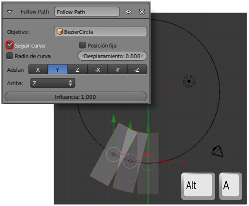

Configurar el movimiento
Al seleccionar la curva y acceder a su panel volvemos a la botonera Animación de recorrido para determinar en número de fotogramas que necesita el círculo para ser transitado de principio a fin. Por defecto este valor es de 100. Al igual que ocurría en el modificador Construir en el parámetro Longitud, a valores altos de Fotogramas menor será la velocidad. Nosotros alteramos el valor de Fotogramas a 250 para hacerlo coincidir con el valor por defecto de los fotogramas totales de la animación.
El cubo ahora sigue la trayectoria mucho más despacio que antes.
Para seguir configurando vamos a la Restricción  Seguir camino que tiene asignada el propio cubo:
Seguir camino que tiene asignada el propio cubo:
- El cubo se está desplazando a lo largo de la trayectoria pero sin girar de acuerdo con ella. Al activar la opción Seguir curva la cosa cambia.

- Algo se ha ido al traste. Con esta orden los ejes Locales y los Globales ya no coinciden y ahora el eje Y Local mira hacia adentro de la curva. La solución es cambiar Adelante de Y a X.
Cambiar el sentido de la curva
Mientras que en una curva abierta este cambio de sentido obedecerá a nuestras expectativas, en una curva cerrada ocurrirá un imprevisto. Este es nuestro ejemplo en Modo Edición  y los nodos seleccionados.
y los nodos seleccionados.
Si le decimos a Blender que represente esta curva abierta (Curva/Alternar Cíclico) descubriremos cuál es el primer vértice y cuál es el último.
Es una sorpresa, sin duda, y que nos explica por qué cuando a la curva cerrada le damos la orden Curva/Segmentos/Cambiar dirección este es el resultado.